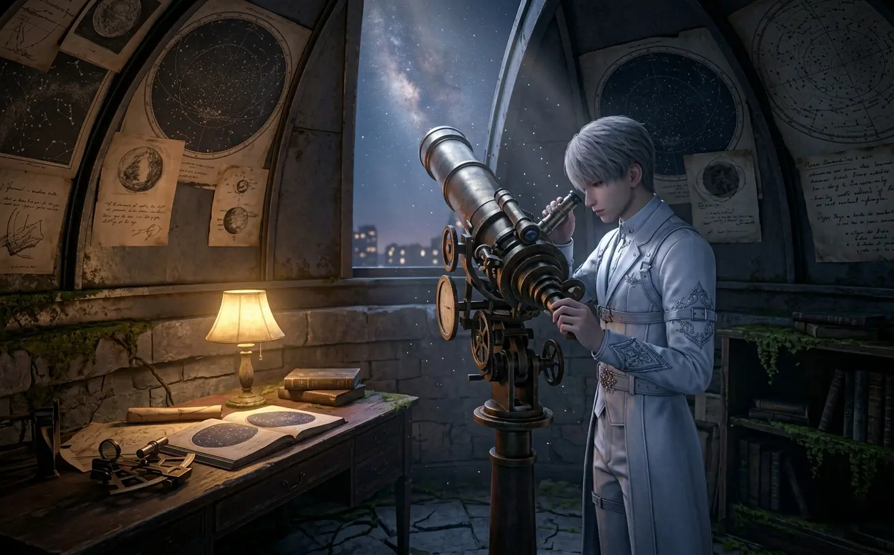
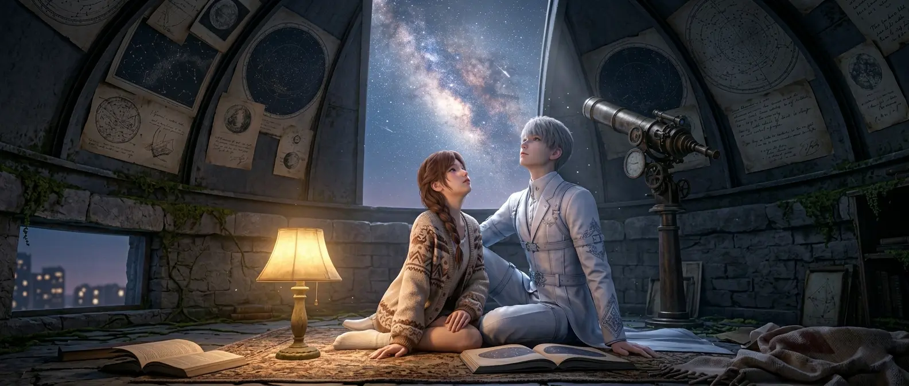
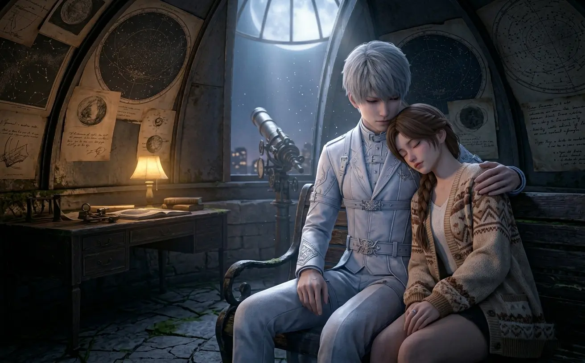
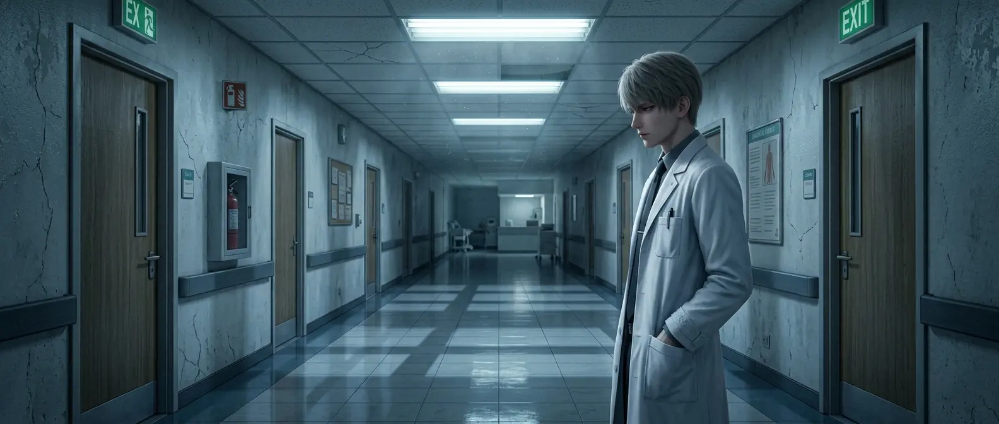
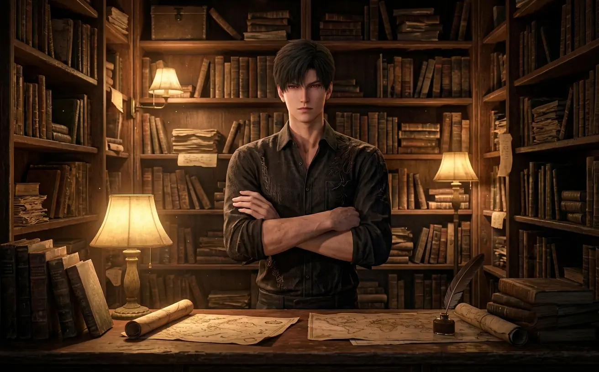
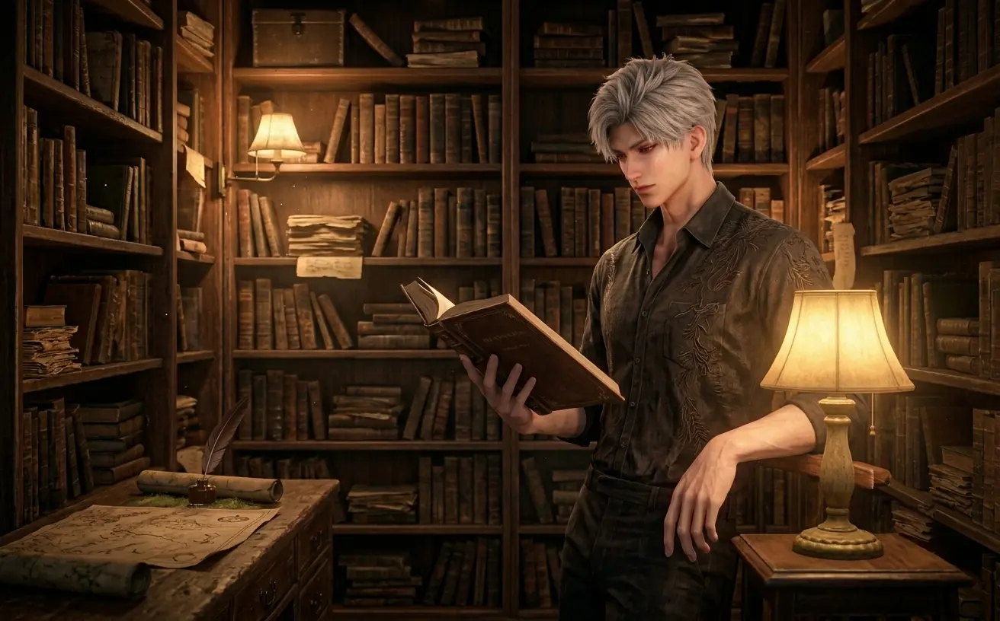
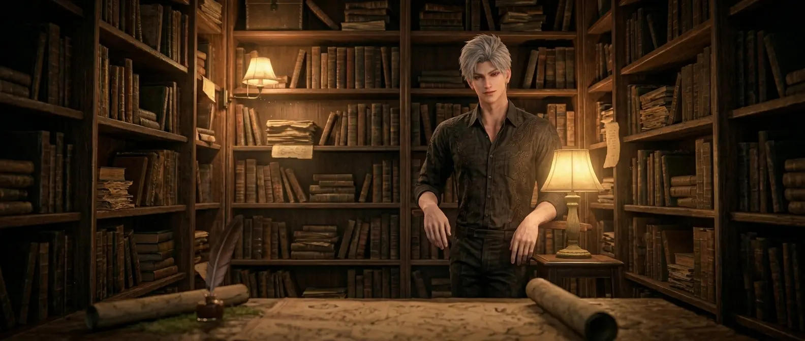
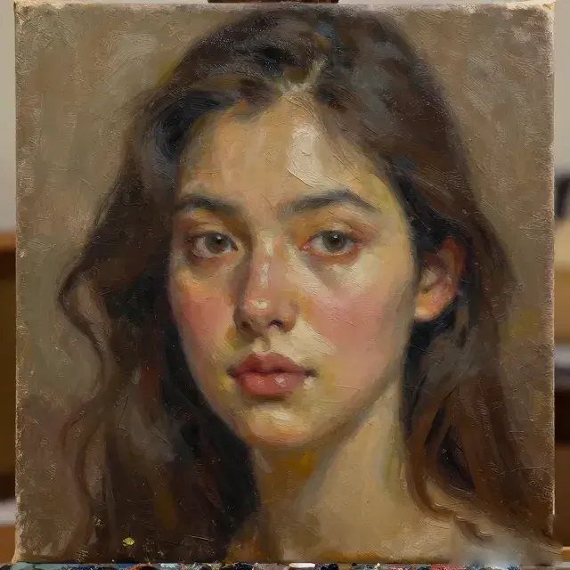
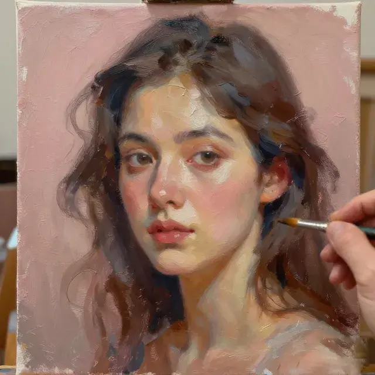

a love and deepspace alternate universe story
what if they weren't hunters.
what if there were no wanderers. no protocores. no n109 zone.
what if they just... lived. ordinary lives. ordinary jobs. ordinary days.
and what if they found each other anyway.
(this is not canon. this is just a dream.)

the stars have always been his first love
Xavier worked at the city's small observatory, the one nobody visited anymore because who had time to look at stars when rent was due.
He was there most nights. Alone. The telescope pointed at the same patch of sky he'd been watching for years. He didn't know why. Just felt like he was waiting for something. Someone.
He'd tell himself it was stupid. He was twenty-six. He'd lived in this city his whole life. There was no one coming.
But he kept watching anyway.
She came on a Tuesday.
The observatory was supposed to be closed. He'd forgotten to lock the side door. Again. He was up on the platform, adjusting the lens, when he heard footsteps below.
"Hello?"
He looked down. A woman stood in the doorway, backlit by the streetlight behind her.
"We're closed," he said.
"I know." She didn't leave. "The door was open."
He stared at her. Something about her face — he couldn't place it. Like he'd seen her before. In a dream. In another life. Somewhere.
"Do you want to see something?" he heard himself ask.

he showed her the stars. she stayed until dawn.
She stayed until dawn.
He showed her Jupiter. Saturn. The Andromeda galaxy. She asked questions. Real ones. Not the bored ones he usually got.
"Why do you do this?" she asked. "Work here. Alone."
He thought about it. "Because I'm waiting for something I can't name."
She looked at him. Really looked. "Maybe you just found it."
He didn't know what to say to that.
She came back the next Tuesday. And the one after that. And then she started coming on Thursdays too.
He never asked her name. She never offered. It became a game. Or maybe a prayer.
One night, she fell asleep on the bench beside him. He took off his jacket and placed it over her. Watched her breathe.
i've been waiting for you, he thought. longer than you know.

he watched her sleep. like he'd done a thousand times before.
She stirred. Opened her eyes. Caught him looking.
"You're staring," she said.
"Sorry."
"Don't be."
He didn't know what that meant. But he didn't look away.
Months passed. She still came. He still watched the stars.
Then one night, she didn't.
He waited. Two hours. Three. The sky darkened. The stars came out. He didn't look at them.
She showed up at midnight. Eyes red. Like she'd been crying.
"I didn't know where else to go."
He didn't ask why. He just opened his arms. She walked into them. Stayed there.
"I think I've been waiting for you my whole life," he said. Quietly. Into her hair.
She didn't say anything. She just held on tighter.
That was enough.
they watched the sunrise together. like they always had. like they always would.
he saved lives. he forgot to live his own.
Zayne was the youngest attending surgeon at the city's busiest hospital. Everyone admired him. No one knew him.
He worked eighteen-hour days. Slept in the on-call room. Ate protein bars for dinner because there was no time for anything else.
His colleagues called him a machine. He didn't correct them.
Machines didn't feel. Machines didn't get lonely. Machines didn't lie awake at 3am wondering if this was all there was.
She was a patient. Not his patient — he was careful about that. He'd seen her in the waiting room. She was there every Wednesday. Same time. Same chair.
Physical therapy. He asked the nurses. Car accident. Recovering slowly.
He started walking past the waiting room on Wednesdays. Just to see if she was there. Just to catch a glimpse.
It was pathetic. He knew it was pathetic. He was a surgeon. He didn't do... this.

he walked past the waiting room every wednesday. just to see her.
One day, she was in the hallway. Her crutch slipped. He caught her arm before she fell.
"You're not a nurse," she said.
"No."
"Then why are you here?"
He didn't have an answer. "I work here."
"That's not what I asked."
She had sharp eyes. The kind that saw through things. Through him.
"Maybe I wanted to make sure you're okay," he admitted.
She tilted her head. Studied him. "You don't even know my name."
"I know."
"And you still care?"
"Yes."
She didn't say anything. But she didn't pull away either.
they talked. about nothing. about everything.
After that, she started coming earlier. Before her appointment. They'd sit in the hospital courtyard. Talk about nothing. About everything.
He told her about the surgeries that kept him up at night. The ones he couldn't save. She told him about the accident. The fear. The slow climb back.
"You save people every day," she said. "Who saves you?"
He had no answer.
"Maybe that's why you're here," she said. "Maybe you're not just checking on me."
He looked at her. "What do you mean?"
"Maybe you're hoping someone will check on you too."
He didn't cry. He never cried. But something in his chest cracked.
She reached over. Took his hand. "You don't have to be the doctor all the time."
"What else would I be?"
"A person."
the courtyard became theirs. a small patch of peace in a world of chaos.

the bookstore was his kingdom. small. quiet. his.
Sylus owned a small bookstore in a neighborhood nobody visited. It was dusty. Cluttered. Perfect.
He didn't need customers. He had his books. His silence. His crow — a stuffed one he'd found at a flea market and named Mephisto for no reason other than it felt right.
People thought he was intimidating. Tall. Dark. Rarely smiled. They came in, looked around, left quickly.
He didn't mind. He preferred it that way.
She came in on a rainy Tuesday. He was behind the counter, reading something old and obscure. Didn't look up.
"Do you have anything on urban legends?"
"Back wall. Third shelf."
She found it. Sat on the floor. Started reading.
An hour passed. She was still there. Two hours.
He finally looked up. She was curled in the corner, book in her lap, completely absorbed.
"The store closes at eight," he said.
She looked at her watch. "It's seven fifty."
"I know."
She smiled. "So you're giving me a ten-minute warning?"
"Yes."
"That's kind of you."
It wasn't kindness. He just... didn't want her to leave. He didn't know why. He didn't examine it.

he watched her read. pretended he wasn't watching. failed.
She came back the next day. And the day after that. And then she started bringing coffee.
"You look like you need caffeine," she said, handing him a cup.
He didn't drink coffee. He drank it anyway.
She was the only person who talked to him like he wasn't scary. Like he was just... a guy. A guy who owned a bookstore. A guy who had a stuffed crow named Mephisto.
"Why Mephisto?" she asked one day.
"Why not?"
"There's always a reason."
He thought about it. "Because he's the only one who's stayed."
She looked at him. Really looked. Like she was seeing something no one else bothered to see.
"That's sad," she said.
"It's just true."
"They can be the same thing."
He didn't know what to say to that. So he changed the subject.
Weeks passed. She became a fixture. The dusty little bookstore felt less dusty. Less empty.
He caught himself smiling. Just slightly. Just when she wasn't looking.
She noticed anyway. "You're smiling," she said.
"No I'm not."
"You are."
"It's gas."
She laughed. A real laugh. The kind that filled the room.
He wanted to hear it again. So he said something else. Something stupid. She laughed again.
This was dangerous.

he caught himself smiling. it was terrifying. it was wonderful.
One night, she stayed until after close. They sat on the floor of the bookstore, surrounded by books, talking about nothing.
"Why do you keep coming back?" he asked.
"Because you're interesting."
"I'm not."
"You are."
He looked at her. "No one's ever called me that before."
"Then everyone else is blind."
He didn't know what to do with that. So he did nothing. Sat there. Let the silence stretch.
She didn't fill it. She just stayed.
That was the moment he knew. He was in trouble.
the bookstore became theirs. a sanctuary of quiet and old pages and something neither of them could name.
his studio was his armor. no one was allowed inside.
Rafayel painted in a small studio on the top floor of an old building. The walls were covered in unfinished canvases. The floor was stained with paint. The windows faced the sea.
He didn't show his work. Didn't sell it. Didn't let anyone see it.
"Why do you paint if no one sees it?" people asked.
"Because I don't paint for anyone."
It was a lie. He painted for the one person who wasn't there.
He didn't know who she was. But he painted her face over and over. Same features. Same expression. Same eyes that looked like they'd seen something he couldn't name.
He was obsessed. He knew it was unhealthy. He didn't care.
She found the studio by accident. The door was unlocked — he'd forgotten to close it. Again.
He heard footsteps. Turned around. She was standing in the doorway, looking at the paintings.
"Those look like me," she said.
His heart stopped. "You're not supposed to be here."
"Your door was open."
"That doesn't mean —"
"Who is she?"
He didn't answer.
"Is she real?"
"I don't know."
She walked closer. Studied the canvas nearest to her. "You've been painting the same face for years."
"How do you know that?"
"The dates. On the corners."
He'd forgotten about the dates.

he'd painted her face for years without knowing why.
She turned to him. "You've been waiting for someone."
"That's not —"
"It's okay."
"It's not. You don't even know me."
"I know you've been painting my face for years without knowing who I was. That's not nothing."
He didn't know what to say. So he said nothing.
She sat down on the floor. Leaned against the wall. "Tell me about her."
"There's nothing to tell. She's not real."
"She's real enough to paint."
He sat down across from her. "She's... someone I've been looking for. Someone I haven't met yet."
"That doesn't make sense."
"I know."
She looked at him. "Maybe you've already met her."
He stared at her. The studio felt smaller. The air felt thicker.
"Maybe," he said.
they sat in the studio until the sun went down. neither of them moved.
She started coming by. Every few days. She'd bring food. He'd pretend he didn't need it. Eat it anyway.
She watched him paint. He let her. He never let anyone watch him paint.
"You're different," she said one day.
"How?"
"You let me stay."
He thought about it. "Maybe I was tired of being alone."
She smiled. Soft. Sad. "Me too."
He picked up his brush. Painted her. Not the imaginary version. The real one. Sitting in his studio. Eating his food. Looking at him like he mattered.
It was the first painting he ever kept for himself.

he painted her. not the dream. the woman in front of him.
four stories. one city. one woman who changed everything without knowing it.
She never knew.
That the quiet astronomer had been waiting for her across lifetimes. That the brilliant surgeon had learned to feel again because of her. That the brooding bookseller had let someone in for the first time. That the painter had finally found the face he'd been searching for.
She just lived her life. Ordinary days. Ordinary choices. Ordinary moments.
And they loved her. Quietly. From a distance. In ways she'd never understand.
Maybe that was enough.
Maybe it wasn't.
But on ordinary days — the ones that felt a little less ordinary because she was in them — none of them would have traded it for anything.
the end.
(or maybe just the beginning.)